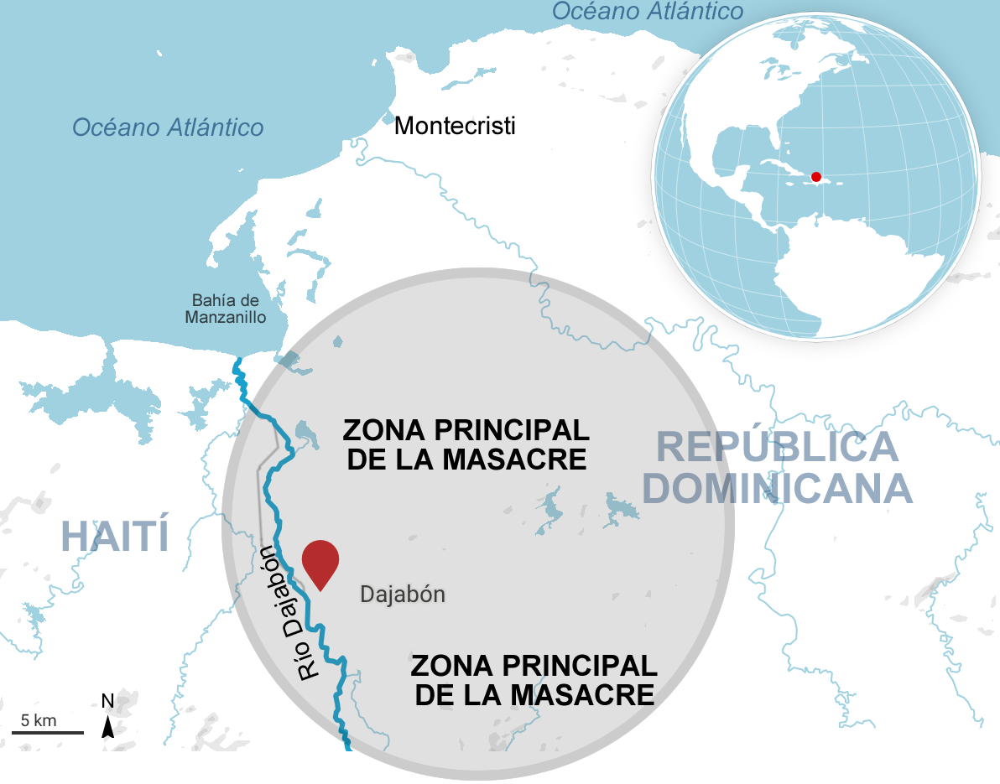
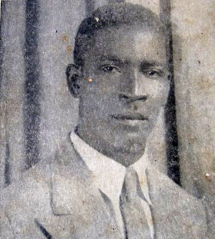
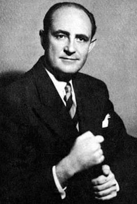
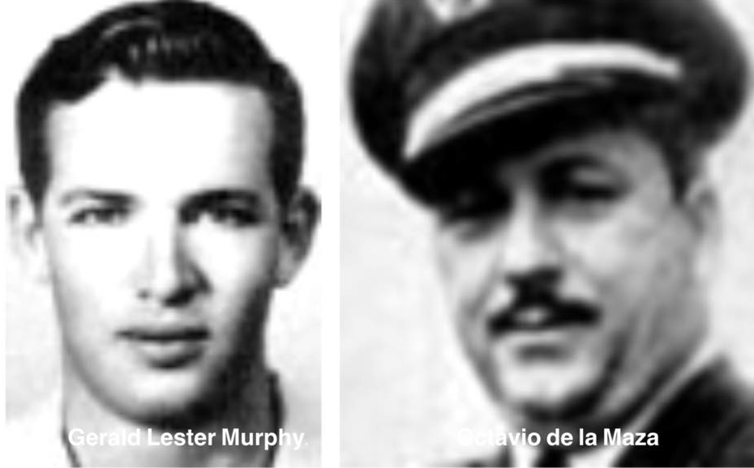
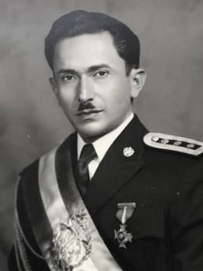

Falta imagenColoca aquí ins/001portadaL.png (laptop)
o ins/001portadaCv.png (celular, vertical)
o ins/001portadaCv.png (celular, vertical)
Historia de la República Dominicana

En 1937 una masacre de haitianos fue desatada en la frontera, al noroeste de la República Dominicana a pocos días del presidente Trujillo visitar la zona. Muchos autores afirman que la acción duró entre 36 y 48 horas.
El ejército dominicano y paramilitares desataron una masacre asesinando a miles de haitianos y familias que se habían establecido en la frontera noroeste, en las inmediaciones a Dajabón y Mao.
Los métodos de ejecución incluyeron golpes con garrotes, puñaladas y machetazos. Las cifras de víctimas varían: el gobierno haitiano estimó más de 12,000 muertos, mientras que el régimen trujillista llegó a reconocer hasta 17,000, una cifra que la historiografía considera inflada. El objetivo macabro era liberar el territorio dominicano ocupado por haitianos y el trujillismo actuó de la manera que mejor entendía, implantando el terror.
El gobierno de Haití sometió una demanda judicial que finalmente ganó. El gobierno de Trujillo tuvo que hacer varios pagos por el incidente. El episodio hoy se conoce como la "MASACRE DEL PEREJIL".
El 2 de noviembre de 1934, Trujillo había visitado Haití y firmó un Tratado Fronterizo con el presidente Stenio Vincent, reconociendo el territorio de Hincha (oeste de la actual Bánica) como territorio haitiano.
Los asesinos llevaban una rama de perejil en la mano y se la mostraban a los detenidos, pidiéndoles que pronunciaran la palabra "perejil". Si la persona no lograba pronunciar la palabra correctamente, según la fonética dominicana, era identificada como haitiana y ejecutada de inmediato.
Años antes Trujillo se había reunido con 2 presidentes haitianos (Louis Borno y Sténio Vincent) buscando una solución al problema fronterizo, al robo de ganado y destrucción de propiedades agrícolas.

El 7 de enero de 1946 se produjo una huelga de trabajadores azucareros del Ingenio Azucarero de La Romana. Los trabajadores se lanzaron en una huelga indefinida exigiendo aumento salarial y el cumplimiento de la jornada por 8 horas de trabajo. La ley exigía que los obreros debían laborar 12 ó 14 horas a lo que se oponían los trabajadoress. También pedían el pago de las horas extras de trabajo.
La empresa azucarera de La Romana era estadounidense y la única extranjera que Trujillo respetó y no pudo comprar, ni chantajear.
Los obreros ganaron las negociaciones. Aunque en 1945 ya el fascismo había caído en Europa, Trujillo debía cuidar las formas pero no olvidó el hecho.
Los dirigentes obreros Mauricio Báez, Dato Pagán y Freddy Valdéz debieron asilarse en la Embajada de México para proteger sus vidas.
Mauricio Báez fue secuestrado y desaparecido por matones de Trujillo el 10 de diciembre de 1950 en la Habana, Cuba. Su cuerpo nunca apareció

El 12 de marzo de 1956, el abogado español Manuel de Jesús Galíndez Suárez fue secuestrado por 2 hombres en Nueva York y nunca más volvió a aparecer.
Galíndez nació en España en 1915, se graduó de abogado y durante la Guerra Civil Española huyó a Francia. Llegó a la República Dominicana el 19 de noviembre de 1939, acogiéndose a las facilidades que Trujillo ofrecía a los españoles que Francisco Franco expulsaba (opositores e inconformes). Trujillo quería "blanquear" el país y Franco no los quería en España.
Muchos refugiados fueron confinados en "colonias agrícolas" pero Galíndez, por sus cualidades, logró que lo nombraran profesor en la Escuela Diplomática de la Cancillería y luego trabajó en la Secretaría de Estado de Trabajo como Asesor Legal. También fue tutor personal de Ramfis Trujillo.
Durante un viaje a Cuba, el intelectual desertó y se estableció en Nueva York.
Galíndez presentó un trabajo de tesis en la Universidad de Columbia para su doctorado, se llamó "La Era de Trujillo". La obra analiza y narra el desarrollo de los diferentes gobiernos trujillistas desde 1930 y donde se refirió a aspectos familiares de Trujillo.
Las reconstrucciones asumen que Trujillo encolerizó cuando se enteró.
Según la revista TIME (1957), las investigaciones del FBI y del senador Charles Porter demostraron que Galíndez fue secuestrado por 2 individuos que lo drogaron y posteriormente lo trasladaron a República Dominicana en un aero-taxi contratado al piloto estadounidense Gerald Lester Murphy.
Según testimonios recogidos por las investigaciones, se afirmó que Galíndez fue llevado ante Trujillo, quien lo habría sometido a comer varias páginas del libro antes de matarlo. Su cuerpo nunca apareció.
El FBI implicó a Minerva Bernardino, embajadora dominicana en Washington; a su hermano Felix W. Bernardino; al General Arturo Espaillat (Navajita); al Teniente Ludovino Fernández; a Porfirio Rubirosa, entre otros.

Resultó que el piloto estadounidense Murphy, era un borracho y bebedor y en una ocasión habló de más, alardeando de que el pasajero que trajo era Galíndez. El 3.Dic.1956, Murphy desapareció. Su automóvil fue hallado abandonado en la costa, frente al mar Caribe frente a la ciudad.
El régimen acusó al piloto dominicano, Octavio de la Maza, quien era un supuesto amigo de haber asesinado a Murphy por una disputa, alegando que Murphy cayó al Mar Caribe.
El 7.Ene.1957, De la Maza apareció ahorcado en su celda con una nota de suicidio confesando el crimen. Sin embargo, las investigaciones de los estadounidenses determinaron que las tuberías donde supuestamente se colgó, no soportaban el peso de un cuerpo. Octavio De la Maza (Tavito), era hermano de Antonio de la Maza, un ex militar que finalmente fue el principal promotor del asesinato de Trujillo.

La policía de Costa Rica detuvo en San José a un grupo de sicarios vinculados al régimen de Rafael L. Trujillo, acusado de planear el asesinato del presidente costarricense José Figueres Ferrer. El grupo era encabezado por Jesús González Cartas, alias "El Extraño". Después de varios meses de prisión, fueron deportados a Panamá. Figueres era un abierto opositor de las dictaduras. Impulsó un gobierno democrático y convirtió a su país en refugio de exiliados políticos, incluidos numerosos dominicanos perseguidos por Trujillo.
El 26 de julio de 1957 asesinaron a balazos al presidente guatemalteco Carlos Castillo Armas en el mismo Palacio Presidencial de la Ciudad de Guatemala. Castillo Armas fue baleado dentro de la Casa Presidencial por un miembro de su guardia personal (identificado oficialmente como Romeo Vásquez Sánchez), quien luego apareció muerto.
Johnny Abbes García, el jefe de la policía secreta de Trujillo y agente en Centroamérica, fue el encargado de coordinar el complot.
Trujillo financió y armó a Castillo Armas para derrocar al gobierno de Jacobo Árbenz en 1954. Trujillo le exigió a Castillo Armas una gran condecoración (la Orden del Quetzal) y la entrega de exiliados políticos dominicanos, a lo que Armas se negó tras asumir el poder. Ante los desplantes y la falta de agradecimiento, Trujillo ordenó su muerte.
El gobierno trujillista quería desmentir las noticias internacionales que divulgaban los asesinatos y torturas a los sobrevivientes de la Invasión Rebelde del 14 de junio de 1959.
El Secretario de Trabajo, Ramón Marrero Aristy promovió la idea de traer al famoso periodista estadounidense Tad Szulc para aclarar el episodio. Se le permitió una investigación sin restricciones.
El 12 de julio de ese año, el periódico estadounidense The New York Times publicó un reportaje escrito por Szulc donde narraba los horrores y torturas en contra de los rebeldes.
La publicación del reportaje en Nueva York enfureció a Trujillo. El 17 de julio de 1959, los cuerpos de Marrero Aristy y su chofer fueron hallados calcinados en el interior de su vehículo en la carrtetera de Constanza. El régimen oficializó la versión de un accidente, pero las evidencias apuntaron a un asesinato
Aristy fue un hombre inteligente y excelente escritor. Su obra más conocida se titula "Over" y en ella relata la vida de explotación laboral y la miseria de los obreros en los ingenios azucareros y los bateyes de la época.
Un atentado contra el presidente venezolano Rómulo Betancourt por poco acaba con su vida el 24 de junio de 1960. El presidente se dirigía por la avenida de Los Próceres en Caracas, con destino a un desfile militar, cuando un vehículo a su lado explotó quemándole y desfigurándole el rostro.
Los investigadores atraparon a los autores físicos y revelaron que eran pagados con el SIM.
Betancourt atacaba públicamente en foros internacionales al gobierno dictatorial dominicano. Trujillo no toleraba a Betancourt y se hicieron enemigos políticos.
El 20 de agosto de 1960, en votación unánime la Organización de Estados Americanos (OEA) declaró culpable al gobierno trujillista de agresión en contra del presidente venezolano. En una sanción sin precedentes, muchos países suspendieron relaciones diplomáticas con la República Dominicana e interrumpieron las relaciones comerciales hasta un nuevo gobierno sin Trujillo.
El 25 de noviembre de 1960, las hermanas Patria, Minerva y María Teresa Mirabal fueron asesinadas por agentes del SIM (Servicio de Inteligencia Militar) cuando regresaban de visitar a sus esposos presos en Puerto Plata.
Las hermanas Mirabal eran activistas opositoras al régimen de Trujillo y se habían convertido en un símbolo de la resistencia. Minerva, en particular, era abogada y había rechazado los avances del dictador, lo que desató su ira.
El régimen simuló un accidente de tránsito, pero las evidencias de golpes y estrangulamiento demostraron que fue un asesinato. Este crimen provocó una condena internacional masiva y aceleró el fin de la dictadura.
En la actualidad, cada 25 de noviembre es conmemorado en todo el mundo como el Día Internacional de la Eliminación de la Violencia contra la Mujer, en honor a las hermanas Mirabal.
Minerva Mirabal era líder, desafió tanto el machismo patriarcal de la dictadura y el autoritarismo político. Fue una de las primeras mujeres en graduarse de abogado en el país. A pesar de que alcanzó el grado Summa Cum Laude el dictador y sus esbirros le impidieron ejercer la profesión por su posición política.
Minerva fue líder y fundadora de primera fila del Movimiento Político 14 de Junio (1J4).
Su vida encarnó la defensa de los derechos civiles y la libertad individual propios del pensamiento liberal.